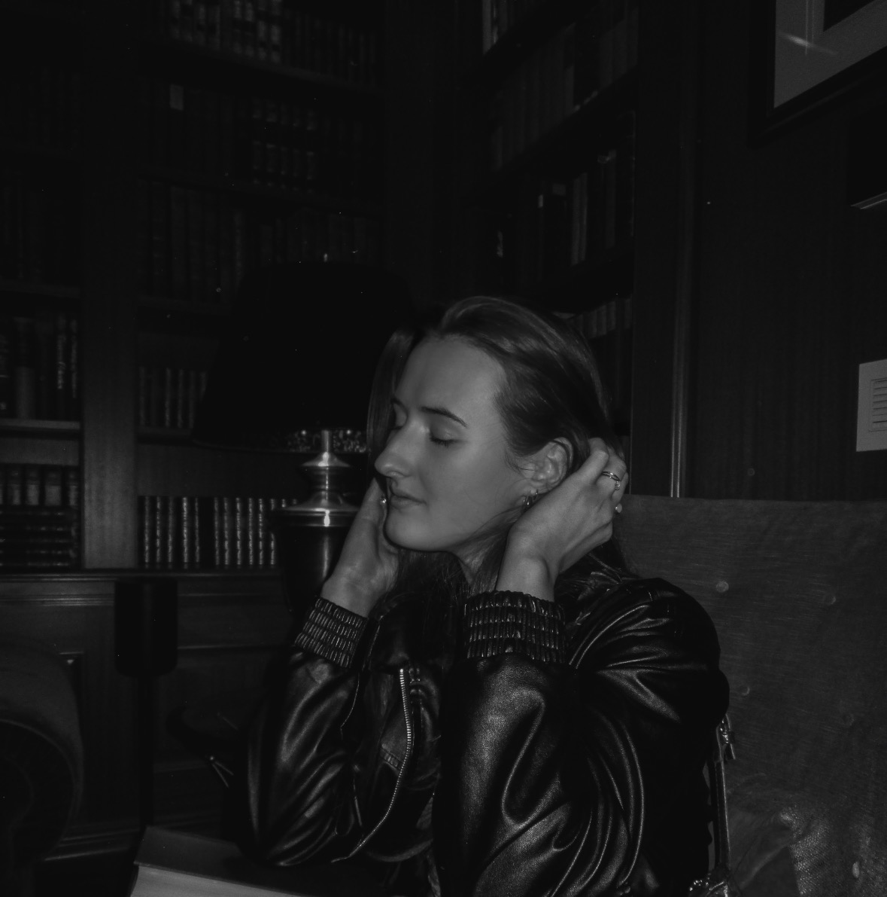

Creative Nonfiction
Religion, and Kissing
A coming-of-age essay exploring faith, adolescence, friendship, and the anxiety of a first kiss.
View Project →Graduated from Virginia Polytechnic Institute and State University with a bachelor's degree in Creative Writing and Professional & Technical Writing. Experienced in writing, editing, and audience-focused communication, with a passion for transforming complex ideas into clear, engaging content.

A coming-of-age essay exploring faith, adolescence, friendship, and the anxiety of a first kiss.
View Project →A review examining grief, time, emotional distance, and fantasy after the heroic victory.
View Project →An email newsletter encouraging students to fall in love with reading again through audience-focused content.
View Project →